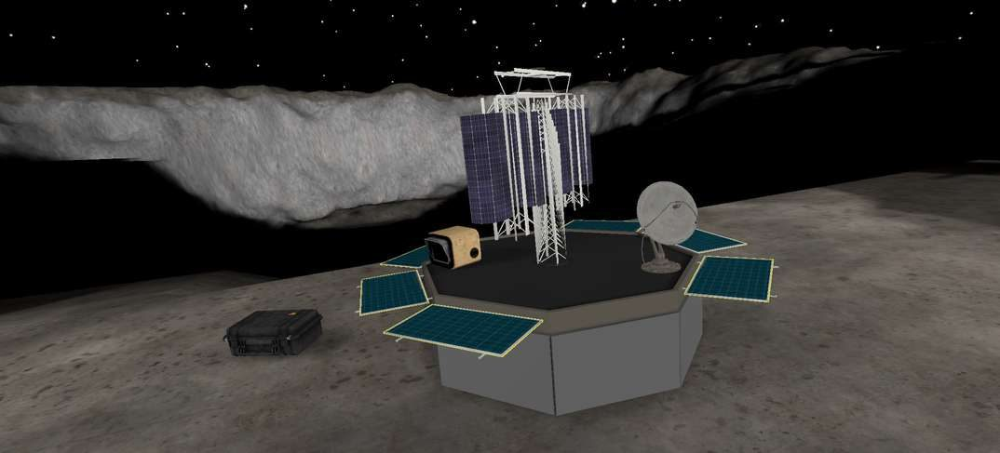
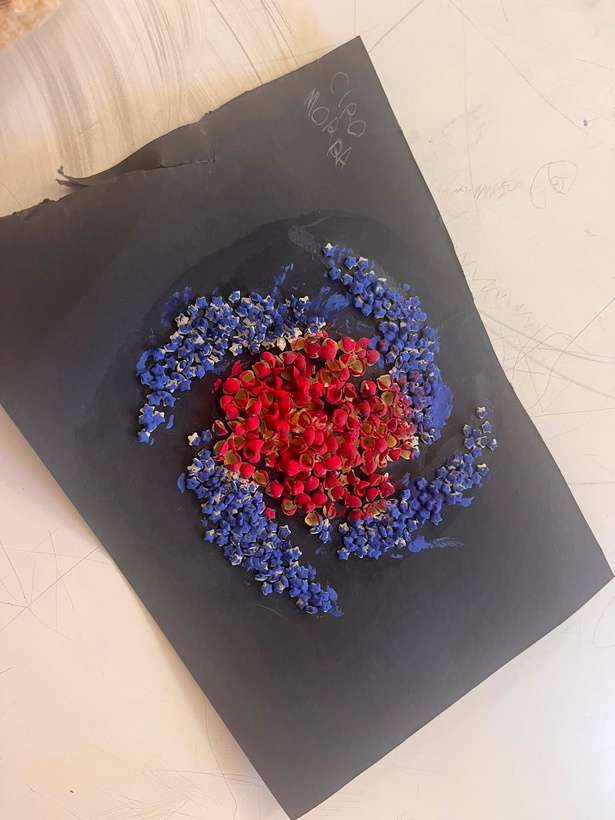
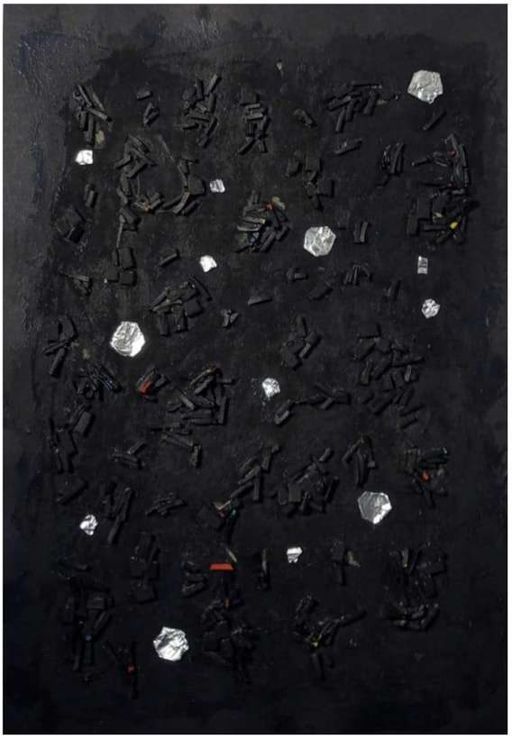
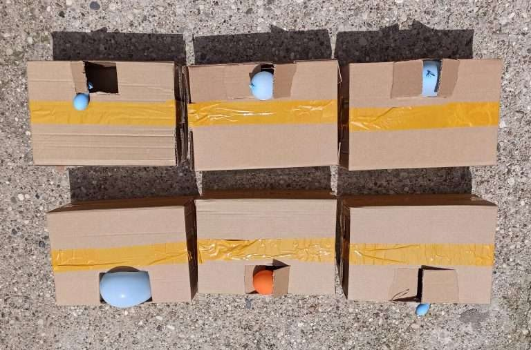
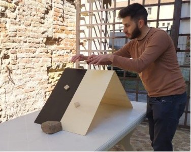
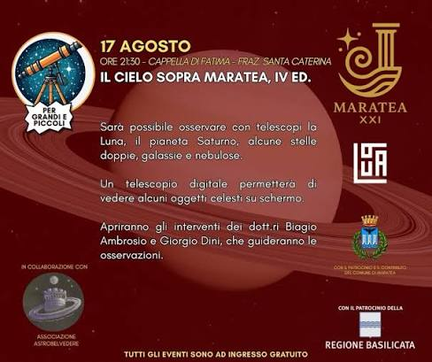

QUANTUM – La fisica quantistica è per tutti
Gestione completa della mostra nazionale: allestimento e curatela, progettazione degli spazi, formazione del team, prenotazioni e visite guidate. Oltre 900 visite in tre mesi.
Progetti
Mostre, app in realtà virtuale, laboratori per le scuole e attività per i festival.
Gestione completa della mostra nazionale: allestimento e curatela, progettazione degli spazi, formazione del team, prenotazioni e visite guidate. Oltre 900 visite in tre mesi.

App VR di esplorazione lunare, cuore della mia tesi di dottorato. L'ho progettata e sviluppata da solo e testata con circa 100 persone tra pubblico e ricercatori.

Il seguito multigiocatore di MOON RESCUER: due persone esplorano la Luna insieme in tempo reale. Sviluppato in una tesi di laurea che ho co-diretto.

Laboratorio extracurricolare di 30 ore per 15 ragazzi di scuola media: astronomia e fisica con modelli da costruire, orologio solare, simulazioni con Stellarium e Scratch.

Un'attività hands-on sullo spettro della luce e sulla materia oscura.

Scatole da esplorare per capire entropia e termodinamica giocando con il disordine.

Un'attività hands-on su gravità e forze classiche, pubblicata sulla piattaforma astroEDU.

Talk dal vivo e guida all'osservazione al telescopio, ogni estate dal 2023.